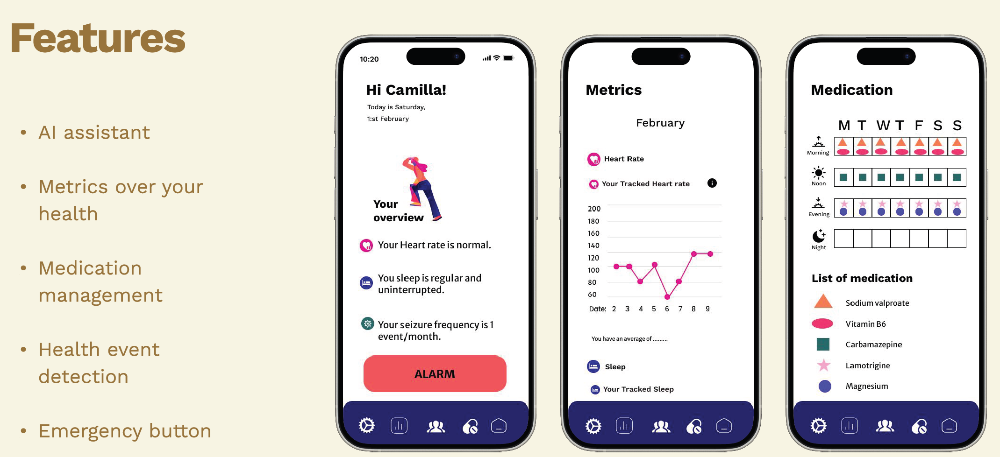

Sahlgrenska Global Health Hackathon
PROBLEM STATEMENT:
Chronic diseases place a significant burden on global health, affecting millions and overwhelming healthcare systems. Effective management of these conditions requires ongoing care, much of which often occurs outside healthcare settings with a focus on preventing complications and managing risk factors. Early intervention and continuous monitoring are essential to improving outcomes, especially in cases where diseases can worsen unpredictably. Epilepsy serves as a prime example of such a condition, illustrating the challenges faced in managing chronic illnesses.
Epilepsy affects approximately 5 million people globally each year (WHO, 2024) and is one of the most common neurological disorders. With the right treatment, up to 70% of people with epilepsy can live seizure-free, yet the unpredictable nature of seizures creates ongoing challenges. Seizures can strike suddenly, causing immediate physical harm and long-term psychological stress for both patients and caregivers. Managing epilepsy requires a personalized approach, where treatment is adjusted to the unique needs of each patient, ensuring that care remains effective over time.
However, the management of epilepsy is hindered by several key obstacles. Fragmented data from clinical records, wearable devices, and lifestyle tracking complicate the ability to monitor patients effectively. Seizures, by their very nature, are unpredictable and often occur without warning, heightening anxiety and making it difficult to manage the disease in real-time. Medication non-adherence, a common issue in chronic disease management, leads to inconsistent control and increased risk of complications. Furthermore, healthcare providers also face challenges in delivering personalized care, with increasing workloads and time constraints making it difficult to offer the necessary attention to each patient.
By overcoming data fragmentation, improving personalized care, and leveraging technology, we can significantly enhance the management of epilepsy and other chronic conditions.
INNOVATION AT A GLANCE
Objective: To create a one-stop platform for chronic disease management, starting with epilepsy, that empowers patients to monitor and manage their condition outside medical settings. The platform aims to reduce the burden on patients and caregivers while enabling healthcare providers to deliver more personalized and effective interventions. Success in its initial implementation will pave the way for the platform to support more neurological disorders and other common chronic diseases.
Target Audience: Patients and Caregivers: Offering free access to monitoring tools and full control over their data. Healthcare Providers: Equipping neurologists, epilepsy specialists, and hospitals with predictive analytics and data-driven insights.
Key Features:
- Data Aggregation From Clinical, Behavioral, and Wearable Sources: By unifying data from multiple sources, this feature eliminates fragmentation, creating a comprehensive platform for monitoring and management. Enhanced by AI, it streamlines the continuous collection of data while ensuring researchers have access to high-quality, anonymized datasets, enabling advancements in treatment and understanding. Most importantly, patients maintain full control over their data.
- AI-Powered Prediction of Seizures and Critical Events: The platform uses collected data to issue reliable alerts (with confidence level) about the potential occurrence of seizures within a specified time frame. This feature addresses the unpredictability of seizures, helping patients and caregivers anticipate and prepare for critical episodes. It also aids in diagnosing epilepsy by identifying patterns in diverse symptoms, ensuring more accurate and timely interventions.
- Personalized Insights Based on Predictive Analytics: By leveraging AI-driven predictive analytics, this feature provides healthcare providers with systematic insights into patient data, enabling them to optimize and personalize treatment plans for epilepsy patients. By presenting a comprehensive view of a patient’s condition, the platform empowers doctors to make informed decisions and design tailored therapeutic approaches.
- Medication Adherence Tools (Reminders and Tracking): These tools promote consistent medication use, directly addressing the issue of non-adherence. By ensuring patients follow prescribed treatments, this feature contributes to better health outcomes.
- Remote Patient Management:: Through AI-driven platforms, healthcare providers can monitor epilepsy patients remotely. This not only reduces the burden of frequent in-person visits but also improves access to care for patients in remote or underserved areas

- Health Focus:
- Enhancing health monitoring and management outside of medical settings.
- Improving chronic diseases’ early diagnosis and personalized treatment, therefore improving health outcomes and quality of life for patients
- Technology Focus:
- A Multi-Agent AI Model, a cutting-edge system designed to revolutionize chronic disease management, starting with epilepsy. This model coordinates multiple specialized AI agents, each tailored to perform critical tasks such as seizure prediction, real-time monitoring, medication management, reporting and warning, and patient education.
- IoT devices for patient health monitoring.
- Cloud-based infrastructure to ensure scalability and sustainability.
ADDED VALUES FOR CHRONIC DISEASE MANAGEMENT
- Integration Across Diverse Data Sources: Our platform consolidates data from clinical records, IoT devices, lifestyle metrics, and genomics to create a comprehensive health profile. This integration enables more accurate predictions and a deeper understanding of chronic disease management.
- Patient-Centric Data Privacy and Control: Our platform gives patients full ownership of their data, with granular control over what is shared and for what purpose.
- Seamless Integration with Healthcare Systems: Our platform integrates effortlessly with Electronic Health Records (EHRs), streamlining workflows and reducing administrative burdens for healthcare providers. This ensures a unified, up-to-date view of patient data, enabling more efficient, coordinated, and personalized care without disrupting existing processes.